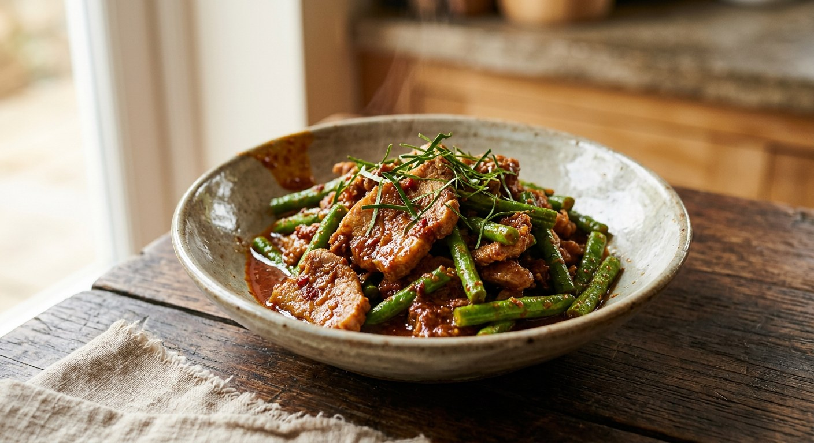

Pork and yardlong beans fried dry in red curry paste, torn kaffir lime leaves, fish sauce and palm sugar — the dish whose name says "chilli-ginger" and whose recipe contains no ginger at all.

ผัด is "stir-fry" and พริกขิง reads, word for word, as "chilli-ginger". So where is the ginger? Nowhere — and Thai cooks have been saying so in print for nearly a century. When the dish appears in the 1935 court cookbook ตำหรับสายเยาวภา, M.R. Tueang Snitwongse stops to note that "พริกขิงผัด" contains no ginger at all, that nobody can explain the name, and that he had asked the elders about it and got no further. The accepted answer today is plainer: พริกขิง was simply the old name for curry paste itself. The stir-fry is paste, fried dry.
That is the whole dish: red curry paste bloomed in oil, meat — pork by default, but beef, chicken and razor clams all appear in the Thai sources — and yardlong beans, snapped through with kaffir lime leaf. No coconut milk, no broth, no sauce. Cambodia has the same dish under a name that gives the game away: cha kreung, literally "stir-fried with curry ingredients".
The beans matter as much as the paste. Wongnai's chubbylawyer frames his whole recipe around one question — "how do you stir-fry phrik khing so the yardlong beans keep their colour?" — and his answer is to blanch them in fiercely boiling water and shock them in cold, so they stay green against the brick-red pork. Other cooks throw them into the wok raw and let the last minute of heat cook them through.
| Thai | English | Amount |
|---|---|---|
| หมู (สามชั้นหรือสันคอ) | Pork, belly or lean shoulder, sliced | 250 g |
| ถั่วฝักยาว | Yardlong beans, cut into 5 cm lengths | 300 g |
| น้ำพริกแกงเผ็ด / น้ำพริกผัดพริกขิง | Red curry paste or phrik khing paste | 2 tbsp |
| ขิง (ไม่ใส่ก็ได้) | Fresh ginger, pounded into the paste — optional | 15 g |
| น้ำมันพืช | Vegetable oil | 1 tbsp |
| น้ำตาลปี๊บ | Palm sugar | 1–2 tbsp |
| น้ำปลา | Fish sauce | 1 tbsp |
| ใบมะกรูด | Kaffir lime leaves | 8 |
| พริกชี้ฟ้าแดง / พริกสด | Red spur chilli or bird's eye chillies, sliced | to taste |
The prawn pot (Kapook): fresh prawns plus a handful of pounded dried shrimp, beans, fish sauce, palm sugar and 3–4 tbsp water thrown in at the end to steam the beans — the only wet version among the sources. The crispy-catfish pot (tukata001): fried puffed catfish and salted egg yolk folded in, and an explicit rule — "a phrik khing stir-fry takes no water; fry it dry or the catfish goes tough." The pork-crackling pot (Kapook): pork rind with its fat, ginger pounded into the paste, and pounded dried fish, seasoned so the heat leads, sweet follows, salt trails.
The ginger. The classic recipe — and the 1935 cookbook — contains none, and the name is explained as the old word for curry paste. But half the modern sources put ginger back in: Wongnai's pork recipe pounds fresh ginger into the paste, and Kapook's pork-crackling recipe does the same "for those who love the smell of ginger". Purists call that revision; pragmatists call it flavour.
The beans. chubbylawyer blanches them separately in boiling water, shocks them cold, and serves the pork on top as a bed — his entire recipe is built around keeping their colour. Cookpad's lung yoem and Wongnai's editorial version throw them raw into the wok for the final minute. Both get green beans; the blanched version gets them greener.
Water or no water. tukata001 is explicit: phrik khing is fried dry, no water, or the crisp elements go tough. Cookpad adds "a little water to make stir-frying easier", and Kapook's prawn version adds 3–4 tablespoons so the beans steam at the end. The pork versions mostly stay dry; the seafood versions tend to need the steam.
The paste. Ready-made phrik khing paste (Wongnai's chubbylawyer), plain red curry paste (Cookpad), red curry paste pounded with ginger (Wongnai editorial), or a fully homemade paste of dried chillies, dried shrimp, kapi and black pepper for the mackerel version (Kapook). All are called phrik khing.
The protein. Pork belly or lean pork are the default, but the Thai sources wander happily: prawns with pounded dried shrimp, fried puffed catfish with salted egg yolk, pork crackling, beef in TrueID's "old-style" version, and razor clams in Wikipedia's ingredient list. The paste-and-beans frame stays; the meat is whoever's available.
This recipe is translated from the following Thai-language sources. Where they disagree, we've said so.
1. Cookpad — "หมูผัดพริกขิงถั่วฝักยาว" by ครัวลุงเยิ้มอยากค่อยทำ (the recipe used here: paste fried in oil, pork, torn kaffir lime, beans, a splash of water) — cookpad.com/th
2. Wongnai Cooking — "วิธีทำ 'หมูนุ่มผัดพริกขิง'" (editorial recipe: ginger pounded into red curry paste, palm sugar melted into the paste, 350 kcal/serving) — wongnai.com
3. Wongnai — "ผัดพริกขิงหมูสามชั้นใส่ถั่วฝักยาว" by chubbylawyer (the blanched-bean method, colour first) — wongnai.com
4. Kapook Cooking — "6 เมนูผัดพริกขิง" (the prawn, crispy-catfish-with-salted-egg, pork-crackling and mackerel versions; tukata001's no-water rule) — cooking.kapook.com
5. Wikipedia (Thai) — "ผัดพริกขิง" (the name: no ginger; old word for curry paste; the 1935 สายเยาวภา cookbook; the Cambodian cha kreung) — th.wikipedia.org